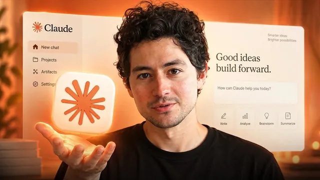

클로드 코드에 3만 1,141달러 태워서 배운 것

원본 영상 보기 →
- AI 결과물은 한 번이 아니라 성공률로 판단해야 해요
- 컨텍스트는 비용이자 지능이에요
- 세세하게 통제하기보다 '완료 기준'과 '진단 먼저'로 맡기세요
한 줄 요약
몇 달 동안 Claude Code에 3만 달러 넘게 쓴 Nick Saraev가, 처음 시작할 때 알았으면 좋았을 요령 15가지를 쉬운 것부터 어려운 순으로 정리했어요. 결과의 일관성을 확보하는 평가 루프, 컨텍스트 창 관리, 병렬 작업과 저렴한 모델 활용, CLAUDE.md 운영, 장애 대비용 백업 모델까지 다룹니다.
전체 내용 정리
첫 결과물을 믿지 마세요
Nick은 실제 청구서를 보여 주며 몇 달 동안 Claude Code에 3만 달러 이상을 썼고, 여러 모델을 1,000시간 넘게 써 왔다고 밝힙니다.
첫 번째 요령은 첫 출력값을 신뢰하지 말라는 거예요. Claude 같은 거대 언어 모델은 결정론적 시스템이 아니라서 같은 프롬프트를 넣어도 매번 결과가 다릅니다. 첫 실행이 훌륭했더라도 두 번째는 "완전히 쓰레기"일 수 있어요. Nick이 함께 일하는 수십억 달러 규모의 기업도 첫 결과물을 과신했다가 업무 전반에서 큰 골칫거리를 겪었다고 합니다.
그래서 프롬프트를 사내 표준 절차(SOP)로 굳히기 전에 평가(eval)를 반복해야 해요. 10번 정도 돌려서 성공 횟수를 셉니다. 10번 중 7번이면 성공률 70%죠. 프롬프트를 고친 뒤 다시 세서 8번으로 올라가면 새 프롬프트를 쓰는 식이에요.
스스로 검토하고 고치는 루프를 만드세요
두 번째는 Claude가 자기 결과물을 검토하게 하는 겁니다.
한 번의 시도로 결과물을 받는 건 초안만 쓰고 끝내는 것과 같아요. 초안은 보통 엉망이기 마련이고요. 그러니 Claude가 다시 시도하기 전에 자기 작업을 확인하고 고칠 수단을 줘야 하고, 반복할수록 품질이 올라갑니다.
평가 기준이 조금 부족해도 괜찮아요. 스크린샷, 예시와의 비교, 웹사이트라면 Lighthouse PageSpeed Insights 같은 표준화된 테스트로 수정 루프를 주기만 하면 비교 대상이 생겨서 품질이 크게 좋아집니다.
프롬프트는 Claude에게 쓰게 하세요
Nick은 이제 AI가 사람보다 프롬프트를 더 잘 쓴다고 봅니다.
"Y를 위한 X를 만들어 줘"라고 바로 시키는 대신, "Y를 위한 X를 만들고 싶은데, 프롬프트 작성을 도와줄래?"라고 해보세요. Claude가 누구를 위한 것인지 묻고, 좋은 결과물의 정의를 함께 잡고, 한 페이지짜리 예시까지 내놓습니다. 이런 메타 프롬프팅은 범위가 크거나 토큰을 많이 쓰는 프로젝트일수록 효과가 커요.
그리고 초창기 모델처럼 세세한 단계별 지시와 "절대 하지 마" 같은 강박적 제약을 걸 필요가 없습니다. Claude를 내부 직원이 아니라 자기만의 검증된 프로세스를 가진 외부 계약자처럼 대하세요. "이것과 저것이 충족되면 완료"라는 완료 기준, "모르면 꼭 물어봐", "테스트는 절대 건너뛰지 마" 같은 핵심 원칙만 주면 됩니다.
버그를 고칠 때도 마찬가지예요. "앱 전체를 고쳐 줘" 대신 "이 앱의 문제점을 전부 나열해 줘, 아직 아무것도 고치지 말고"라고 먼저 진단을 시킵니다. Claude가 생각하는 문제와 내가 고치고 싶은 문제가 다를 수 있거든요. 목록 중 원하는 것만 골라 시켜야 불필요한 수정을 되돌리느라 시간과 토큰이 두 배로 드는 일을 막을 수 있어요.
컨텍스트 창을 가볍게 유지하세요
대화창에 /context를 입력하면 컨텍스트 창이 무엇으로 차 있는지 볼 수 있습니다. 놀랍게도 시스템 프롬프트, CLAUDE.md, 내장 도구, MCP 커넥터, 메모리, 스킬 때문에 첫 마디를 하기도 전에 대략 30%가 이미 차 있어요.
대화가 길어질수록 요청마다 비용이 비싸지고, 문맥 오염(context rot) 때문에 모델 지능도 떨어집니다.
그래서 당장 쓰지 않는 MCP와 스킬은 최대한 꺼 두고, 창이 거의 찼거나 모델이 원하는 대로 답하지 않으면 그 창에서 계속하지 말고 새 인스턴스로 옮기세요. Nick은 자동 압축을 기다리지 않고 훨씬 일찍 /compact를 직접 씁니다.
세션이 길어져서 "X는 하지 마"와 "X처럼 해 줘"가 뒤섞이면 Claude가 어정쩡한 중간값을 내놔요. 그래서 "현재 상황을 요약해 줘"로 완료한 작업·결정할 사항·다음 작업·남은 문제를 정리하게 한 뒤, 틀린 부분을 고쳐 새 창에서 이어가는 핸드오프 노트 방식을 씁니다.
작업이 도는 중에 궁금한 게 생기면 /btw로 곁가지 질문을 던지세요. 메인 컨텍스트를 어지럽히지 않고 실시간으로 답을 받을 수 있습니다.
도구 구성은 가볍고 정확하게
Anthropic이 도입해 전 세계가 따라 한 스킬(skills) 방식은 이제 최선이 아니라고 Nick은 말합니다.
이유가 있어요. 코드가 V1에서 V4로 올라가는 동안 메모·사양서·로그는 V1에 머물러서, 진실의 원천과 Claude가 참고하는 컨텍스트 사이에 간극이 벌어지거든요. 그래서 필요한 내용을 코드에 인라인 주석 등으로 직접 넣어 두면, Claude가 작업할 때마다 코드를 훑으며 최신 정보를 읽게 돼서 결과가 좋아집니다. 예외는 선호 사항이나 교훈 같은 작업 방식을 담는 CLAUDE.md예요.
MCP 커넥터는 클릭 한 번에 연결해 가능성을 빨리 확인하는 프로토타입용으로는 훌륭합니다. 다만 컨텍스트를 많이 차지하고 도구 사양에 군더더기가 많아요. 작동을 확인했다면 간결한 맞춤형 스킬로 바꿔야 컨텍스트 부담이 줄고 정확도가 올라갑니다. MCP를 줄이면 Claude Code를 켤 때마다 보통 3~5초도 아낄 수 있고요.
병렬 처리와 '팬아웃·팬인'으로 속도와 비용을 잡으세요
Nick은 "이거 해 줘, 다음엔 저거 해 줘"처럼 하나씩 시키지 않습니다.
로그아웃 기능 버그, 히어로 섹션 개선, 피드백 양식 변경처럼 서로 겹치지 않는 범위의 작업을 한꺼번에 주고, 하위 에이전트들이 동시에 처리한 뒤 마지막에 병합하게 해요. 오류율이 조금 올라가는 대신 시간을 아낍니다.
조사가 필요한 작업은 '팬아웃·팬인(fan-out & fan-in)' 전략을 써요. 저렴한 하위 에이전트들에게 논문·블로그·레딧 등을 최대한 넓게 훑어 최신 접근법과 남들이 잘 안 쓰는 방법을 찾게 하고, 문헌 뒷받침이 약해도 가설을 세운 뒤 근거를 확인하게 합니다. 그 결과를 메가 프롬프트로 묶어 Opus나 Fable, Mythos 같은 강력한 모델에게 넘겨 최종 결정을 맡겨요. Opus 혼자 다 할 때보다 범위는 넓고 속도는 빠르며 비용은 적게 듭니다.
CLAUDE.md를 다듬고, 백업 모델을 준비하세요
CLAUDE.md는 필수로 설정하되 쓸모없는 정보가 들어가지 않게 주기적으로 점검해야 합니다. Nick은 최근 더 이상 맞지 않는 옛 매출 수치를 넣어 뒀다가, 모델이 위험을 지나치게 피하고 제안 품질이 떨어지는 문제를 겪었어요.
/init으로 무엇이 어디 있는지 요약을 만들고, 전체 파일 경로 제공이나 Python 사용 같은 선호, "확실하지 않으면 물어봐, 기본적으로는 널 신뢰해", 자기소개와 배운 교훈 정도만 넣으면 충분합니다. 모델이 업데이트될 때마다 이 과정을 다시 거치고요.
실수를 반영할 때는 요령이 있어요. "오래된 API를 다시 시도하지 마" 같은 부정형 금지 목록 대신 "파일 읽기는 배치로 처리하라"처럼 실제 해결책을 긍정형으로 적습니다.
평가 루프를 돌릴 때마다 "어떻게 하면 더 적은 토큰으로 더 빨리 처리할 수 있었을까?"라고 묻고 /insights 등으로 반영하면, Nick의 경우 일주일에 3~4시간이 절약된다고 해요.
마지막으로 장애 대비입니다. Claude Code 장애나 품질 변화에 대비해 Codex 같은 다른 모델을 같은 폴더에 백업으로 둡니다. CLAUDE.md와 AGENTS.md를 심볼릭 링크로 연결해 내용을 미러링해 두면, 서비스가 멈췄을 때 Codex에게 "Claude가 하던 부분부터 이어받아"라고 하면 돼요. Nick이 일한 수십억 달러 규모 팀 상당수도 이런 백업이 없어서, Claude Code가 멈추면 생산성이 통째로 마비됐다고 합니다.
핵심 인사이트
- AI 결과물은 한 번이 아니라 성공률로 판단해야 해요: 같은 지시에도 결과가 매번 달라서, 10번 돌려 몇 번 성공하는지 세는 평가 루프가 있어야 업무 표준으로 삼을 수 있습니다.
- 컨텍스트는 비용이자 지능이에요: 대화를 시작하기 전부터 약 30%가 차 있고, 길어질수록 비싸지고 멍청해집니다. 안 쓰는 연결을 끄고 요약해서 새로 시작하는 습관이 품질과 비용을 함께 잡아요.
- 세세하게 통제하기보다 '완료 기준'과 '진단 먼저'로 맡기세요: 계약자처럼 완료 조건만 명확히 주고, 고칠 때는 문제 목록을 먼저 받아 골라 시키면 시간과 토큰이 두 배로 새는 걸 막습니다.
오늘 당장 해볼 것
- 자동화를 맡긴 업체에 "이 자동화를 같은 입력으로 10번쯤 돌려 보고 몇 번 제대로 나왔는지 성공률을 확인했는지" 물어보세요. 한 번 잘 돌아간 걸로 끝내지 않았는지가 핵심입니다.
- 다음에 자동화 수정을 요청할 때 "전부 고쳐 줘" 대신 "문제점 목록부터 먼저 달라"고 해보세요. 그중 실제로 고치고 싶은 것만 골라 요청하면 됩니다.
- 업체에 "Claude가 멈추거나 품질이 떨어지면 다른 모델로 바로 넘어갈 수 있게 백업이 준비돼 있는지" 확인해 보세요.